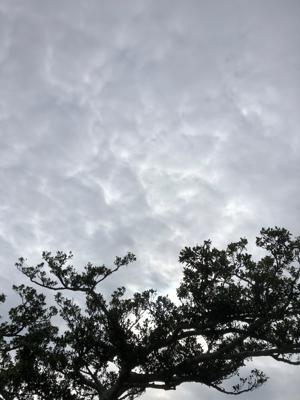
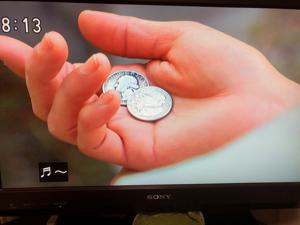

うるがいの話 ある日
最新: ２５セント【うるがいの話 ある日】とは 一日だけのプログです
『うるがいの話』の最新一日だけのプログで、通信料が少なく経済的だ。カニの画像をクリックすると全ての日付が載る『うるがいの話』サイトを表示します
|
|
【うるがいの話】 うるがい(ｳﾙｶﾞｲ urugai)とは、『もずくがに』の名前でとても大きくなります。 |
|---|---|
|
|
【カミマヤーの話】 猫のことを方言でマヤーといいます。カミマヤー（kamimayaa）とは、神の猫のことです。 |
|
【たながぁの音楽】 たながぁ（ﾀﾅｶﾞｰtanagaa）とは手長えびのことで、何種類かあり大きいのは車 エビぐらいになります。 |

|
【ぶながぁの話】 ぶながー(bunagaa)とは、赤い髪の毛、赤い身体、そして身長は１ｍ２０ｃｍ ぐらい、川の蟹を食べているの目撃された。場所は沖縄県国頭郡大宜味村のと ある村僕の隣近所に住んでいる爺さんから、聞いた話です。 |
|
|
【ギーマの話】 ギーマ(giima)とは、山原の里山に咲くスズランに似た、 花を付けます。実は食べられます、 気が付くと口の周りが紫になっています。 |
2022年04月19日 (火）２５セント
17:09
 
復帰してからひさびさに朝ドラで『２５セント』を見る。私が硬貨で使ったう
ちで、最高額である。しかし、日当が２５セントが二つとは・・・、でもその
当時は相場だったのだろう。私が中学生のころ土方のアルバイトをしたとき叔
母さん達も男性に交じって土方をしていた。日当は残念ながら分からない。ち
なみオキコのメロンパン、渦巻パンは５セント、コカ・コーラ（瓶）も５セン
トだった。いま、メロンパンは１３０円くらいかな。
ヨメのお母さんは次のステージへ準備を進める。病院は５月中に別の病院へ移
動しなければいけないらしく（現状では退院は無理）、要支援からより重い要
介護への変更をすべく、昨日那覇市役所へ行く。
１７時０５分 ビットコインの総資産 ￥１５、０９５↑